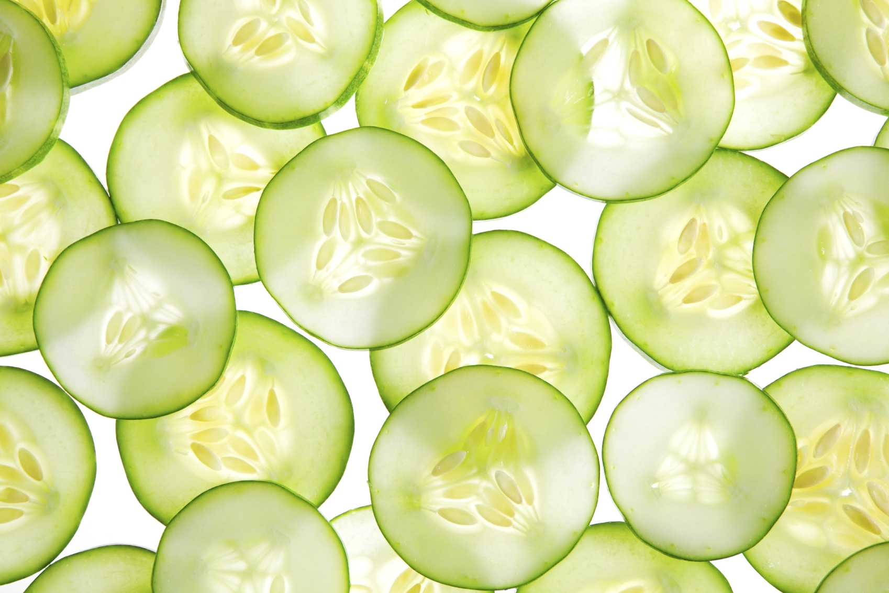

And place any picture

March 5, 2013
Cucumber is a tool that executes plain-text functional descriptions as automated tests.
The language that Cucumber understands is called Gherkin
Feature: Google for Cucumber In order to get more info about Cucumber As a BDDer I want to find Cucumber resources on Google Scenario: find cukes.info Given I am on Google When I search for "Cucumber BDD" Then I see a link to "http://cukes.info/"
Feature: Search courses In order to ensure better utilization of courses Potential students should be able to search for courses Scenario: Search by topic Given there are 240 courses which do not have the topic "biology" And there are 2 courses A001, B205 that each have "biology" as one of the topics When I search for "biology" Then I should see the following courses: | Course code | | A001 | | B205 |
Both are good and required, but BDD should be first.
It will change right in five seconds
In your slides text you can use links and various inline elements for emotional and strong emphasis or just for italic or bold decoration. <code> is used for inline code samples.
You can use two lines header but it would reduce space on a slide. The “Ribbon” theme is designed for seven lines of code after one-line header by default.
This paragraph could be used as a footnote
You can wrap one or more paragraphs into citation, which will make text italic and add a nice quote on the left. Giving the citation source would make it even more serious.
<html lang="en"><head> <!--Comment--><title>Shower</title><meta charset="UTF-8"><link rel="stylesheet" href="s/screen.css"><script src="j/jquery.js"></script></head>
<html lang="en">
Now you can add a note for each block
<meta charset="UTF-8">
And explain what is interesting about it